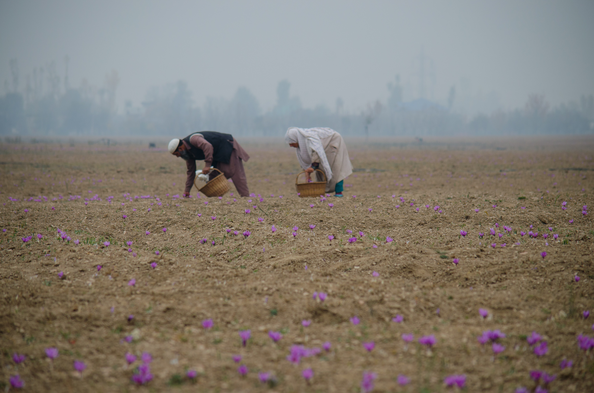

FarmNate is a Non Profit Organization initiative of Indian Government .
We aimed at providing Funds to the Farmers of our country.
FarmNate is a non-profit organization started with the motivation to address and help the issues affecting the high suicide rate among farmers in India. Established under Section 501 (c) (3) (EIN: 45-3588545) of the IRS and registered in the state of Arkansas, our organization started in late 2011, now highlights and implements numerous projects doing invaluable work improving the life of farmers, widows and their families. In 2012, non-profit status was approved by the IRS, so that all the donations made to Save Indian Farmers (SIF) can be claimed as a charitable deduction on your tax return.